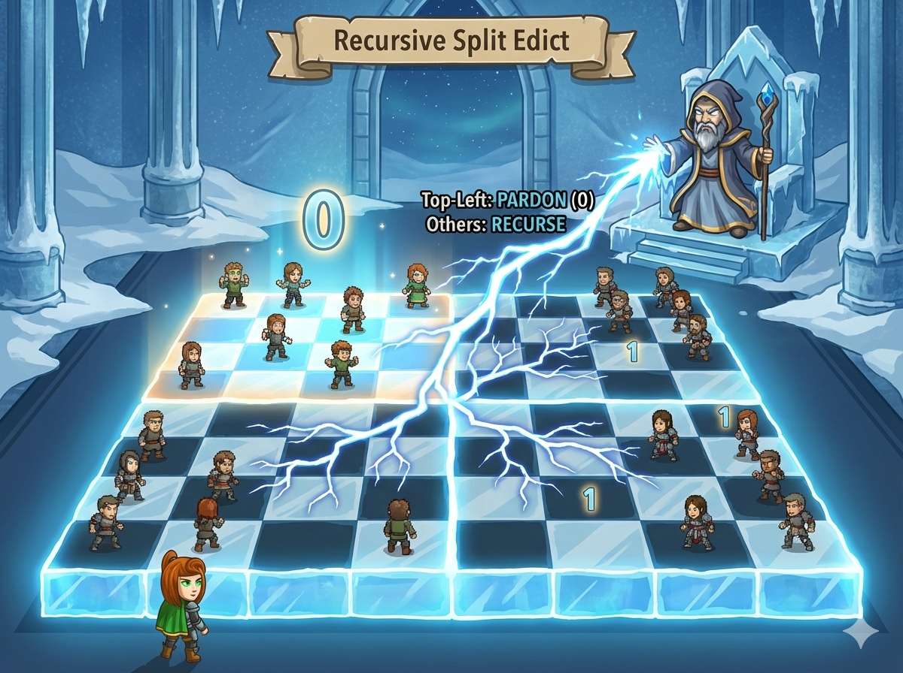

棋盘大小为 $2^n \times 2^n$，一开始所有人都是“罪人” (标记为 1)。
审判官的赦免规则是 递归 的：
你需要输出最终的 01 矩阵。

这道题的核心是 分治 (Divide and Conquer)。
初始化： 先把整个大数组 a 全部填成 1 (memset 或 fill)。
这样递归时只需要负责把该变 0 的地方变 0 即可，剩下的自然就是 1。
位运算： 1 << (n-1) 等同于 $2^{n-1}$，速度更快。
切片赋值： Python 处理二维数组最强大的地方！
matrix[i][y : y+half] = * half
这一行代码就能把一整行的某个区间全部变成 0，不需要写内层循环。
先全填 1，然后递归“挖空”左上角。
#include <iostream> #include <cmath> #include <cstring> // memset 需要 using namespace std; int a[1050][1050]; // 2^10 = 1024，开大一点 // 递归函数 // x, y: 当前正方形左上角坐标 // n: 当前层级 (边长为 2^n) void cal(int x, int y, int n) { // 递归出口：如果是 1x1 的格子，没法再分了 if (n == 0) return; // 计算半个边长 (2的n-1次方) int h = 1 << (n - 1); // 1. 赦免左上角：把 x~x+h, y~y+h 的范围全部置 0 for(int i = x; i < x + h; i++) { for(int j = y; j < y + h; j++) { a[i][j] = 0; } } // 2. 递归处理另外三个角 cal(x, y + h, n - 1); // 右上 cal(x + h, y, n - 1); // 左下 cal(x + h, y + h, n - 1); // 右下 } int main() { int n; cin >> n; // 计算整个棋盘边长 2^n int len = 1 << n; // 初始化：先把所有人都当成罪人 (设为 1) // 然后递归去“赦免” (设为 0) for(int i = 0; i < len; i++) for(int j = 0; j < len; j++) a[i][j] = 1; // 开始递归 cal(0, 0, n); // 输出结果 for(int i = 0; i < len; i++) { for(int j = 0; j < len; j++) { if(j > 0) cout << " "; // 只有前面需要空格 cout << a[i][j]; } cout << endl; } return 0; }
无函数脚本，利用切片操作快速填 0。
# 定义递归函数 # matrix: 二维列表, x,y: 起点, size: 当前边长 def cal(matrix, x, y, size): # 递归出口 if size == 1: return # 计算半长 half = size // 2 # 1. 赦免左上角 (全部变0) # 使用切片赋值，效率极高！ for i in range(x, x + half): matrix[i][y : y + half] = [0] * half # 2. 递归处理另外三个角 cal(matrix, x, y + half, half) # 右上 cal(matrix, x + half, y, half) # 左下 cal(matrix, x + half, y + half, half) # 右下 # --- 主程序 --- n = int(input()) size = 2 ** n # 初始化全 1 矩阵 matrix = [[1] * size for _ in range(size)] # 开始递归 cal(matrix, 0, 0, size) # 输出 for row in matrix: # map(str, row) 把数字转字符串，join 用空格连接 print(" ".join(map(str, row)))